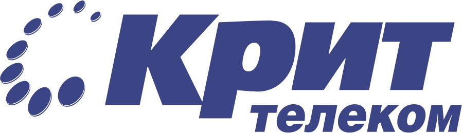

Да. Максимальное количество отслеживаемых линий не должно превышать 20.


Выгодно
Доступно
Надёжно
Да. Максимальное количество отслеживаемых линий не должно превышать 20.
Виртуальная АТС (ВАТС) — это «умная» телефонная связь через интернет и полноценная замена физической офисной мини-АТС. И для ее подключения не нужно проводить ремонтные работы, тянуть провода, покупать и настраивать аппаратуру. Все оборудование, которое необходимо для обеспечения качественной телефонии, находится у нас. Его настройкой и обслуживанием занимаются специалисты МТТ.